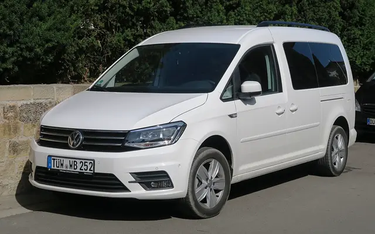

Par Motor › Precios por modelo › Volkswagen Caddy
Precio de segunda mano · noviembre de 2026¿Cuánto vale un Volkswagen Caddy de segunda mano?

Precio justo estimado de un Volkswagen Caddy usado en España, año por año, con los kilómetros normales para su edad y en buen estado: de 6.500 € a 37.800 €. Para tasar el tuyo con sus kilómetros reales y su estado, usa el tasador gratis.
Precios del Volkswagen Caddy por año
Caddy III (2004–2015)
Precio de nuevo: 1.6 TDI 102 CV, 18.000 € · 1.6 102 CV, 17.000 € · 2.0 TDI 140 CV, 22.000 €
| Año | Km normales | 1.6 TDI 102 CV · Diésel | 1.6 102 CV · Gasolina | 2.0 TDI 140 CV · Diésel |
|---|---|---|---|---|
| 2015 | 100.000 km | 11.500 € | 10.600 € | 14.000 € |
| 2014 | 100.000 km | 10.900 € | 10.500 € | 13.300 € |
| 2013 | 100.000 km | 10.400 € | 10.100 € | 12.700 € |
| 2012 | 100.000 km | 9.900 € | 9.600 € | 12.100 € |
| 2011 | 100.000 km | 9.400 € | 9.200 € | 11.500 € |
| 2010 | 100.000 km | 9.000 € | 8.700 € | 10.900 € |
| 2009 | 100.000 km | 8.500 € | 8.300 € | 10.400 € |
| 2008 | 100.000 km | 8.100 € | 7.900 € | 9.900 € |
| 2007 | 100.000 km | 7.700 € | 7.500 € | 9.400 € |
| 2006 | 100.000 km | 7.400 € | 7.200 € | 9.000 € |
| 2005 | 100.000 km | 7.000 € | 6.800 € | 8.600 € |
| 2004 | 100.000 km | 6.700 € | 6.500 € | 8.200 € |
Caddy IV (2015–2020)
Precio de nuevo: 1.0 TSI 102 CV, 19.000 € · 2.0 TDI 102 CV, 21.000 € · 2.0 TDI 150 CV, 25.000 €
| Año | Km normales | 1.0 TSI 102 CV · Gasolina | 2.0 TDI 102 CV · Diésel | 2.0 TDI 150 CV · Diésel |
|---|---|---|---|---|
| 2020 | 95.000 km | 12.500 € | 14.300 € | 17.000 € |
| 2019 | 100.000 km | 12.000 € | 14.500 € | 17.200 € |
| 2018 | 100.000 km | 12.000 € | 14.600 € | 17.400 € |
| 2017 | 100.000 km | 12.000 € | 14.600 € | 17.400 € |
| 2016 | 100.000 km | 11.900 € | 14.000 € | 16.700 € |
| 2015 | 100.000 km | 11.800 € | 13.400 € | 15.900 € |
Caddy V (2021–hoy)
Precio de nuevo: 1.5 TSI 114 CV, 26.000 € · 2.0 TDI 122 CV, 29.000 € · eHybrid (enchufable) 150 CV, 40.000 €
| Año | Km normales | 1.5 TSI 114 CV · Gasolina | 2.0 TDI 122 CV · Diésel | eHybrid (enchufable) 150 CV · Híbrido enchufable |
|---|---|---|---|---|
| 2026 | 5.000 km | 27.300 € | 29.300 € | 37.800 € |
| 2025 | 20.000 km | 24.300 € | 26.000 € | 33.600 € |
| 2024 | 35.000 km | 23.100 € | 24.800 € | 32.000 € |
| 2023 | 50.000 km | 22.000 € | 23.600 € | 30.500 € |
| 2022 | 65.000 km | 21.000 € | 20.700 € | 29.000 € |
| 2021 | 80.000 km | 19.200 € | 19.400 € | 26.500 € |
Kilómetros normales: 15.000 al año en gasolina, híbridos y eléctricos, y 20.000 en diésel, con un máximo de 100.000 km (por encima no tasamos: el precio depende demasiado del historial de cada coche). Cifras redondeadas a 100 €.
Preguntas frecuentes
¿Cuánto vale un Volkswagen Caddy de segunda mano?
Según el año, la versión y los kilómetros, un Volkswagen Caddy usado vale hoy de 6.500 € a 37.800 € en España. El más barato de nuestra tabla es un 1.6 de 2004 (6.500 €) y el más caro un eHybrid (enchufable) de 2026 (37.800 €). Son precios justos estimados entre particulares y profesionales, con los kilómetros normales para su edad y en buen estado.
¿Cuánto valor pierde un Volkswagen Caddy al año?
Con unos años encima, un Volkswagen Caddy pierde alrededor de un 5 % de su valor cada año (calculado sobre el 1.5 TSI de la generación Caddy V). Los primeros años la caída es mayor y a partir de los 70.000 km se acelera.
¿Qué motorizaciones tiene el Volkswagen Caddy?
En nuestra base de datos hay versiones diésel, gasolina y híbrido enchufable, en 3 generaciónes: Caddy III, Caddy IV y Caddy V.
¿Cómo sé si me piden demasiado por un Volkswagen Caddy?
Abre el tasador de Par Motor, elige el Volkswagen Caddy, el año y los kilómetros reales, y escribe lo que te piden. Te diremos si está por debajo del precio justo (chollo) o por encima (caro). Es gratis y no pide registro ni matrícula.
Otros Volkswagen
- Amarok
- Beetle
- CC y Arteon
- Eos
- Golf
- Golf Plus y Sportsvan
- ID. Buzz
- ID.3
- ID.4
- ID.5
- ID.7
- Jetta
- Multivan y California
- Passat
- Polo
- Scirocco
- Sharan
- T-Cross
- T-Roc
- Taigo
- Tiguan
- Touareg
- Touran
- up!
Compara su coste real
El precio de compra es solo una parte. Mira cuánto te costaría al mes con combustible, seguro, neumáticos, mantenimiento y lo que pierde de valor.
Abrir el comparador →